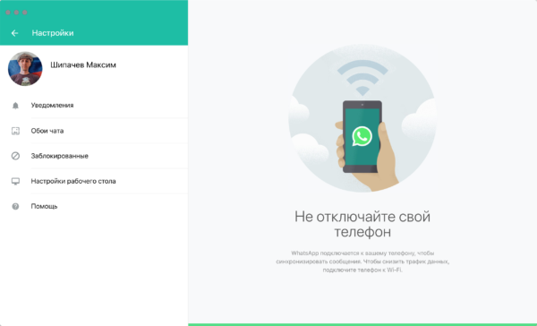

Телеграмом я пользуюсь практически с момента его появления. Вотсап удалил сразу же, к счастью в нём не было на тот момент никаких рабочих чатов.
Месяца три назад пришлось поставить WhatsApp для работы. С удивлением обнаружил, что за несколько лет мессенджер, принадлежащий Facebook, совсем не изменился.
Я намеренно не пишу в этом тексте о телеграм-ботах, частых проблемах с безопасностью в WhatsApp, возможности создавать голосования в Телеграм, лучших стикерах, геочатах или секретных чатах. Подавляющему большинству до этого нет дела. Только практические 5 пунктов.
1. Люди
История с блокировкой Телеграма помогла сформировать качественную аудиторию мессенджера. Здесь практически не встречаются «одноклассники», которые проживают жизнь, пересылая друг другу бесконечные весёлые видео.
В Telegram никто не поздравляет с Пасхой, и не отправляет по всему контакт-листу анимированные цыганские открытки с изображением богатства. Это экономит время.
2. Безопасность
О безопасности люди задумываются, как правило, когда уже поздно.
Так вот в Телеграм вы можете скрыть свой номер телефона и его не увидит никто. Вы можете оставаться анонимным столько, сколько хотите.

3. Удобство
Вы можете использовать Telegram без телефона.
Удивительно, но в 2020 году, WhatsApp для компьютера требует наличия телефона с запущенным WhatsApp в той же локальной сети. Десятки людей просто не могут совладать с этой бесовщиной и используют мессенджер только на телефоне.

В WhatsApp, если вы удаляете изображения или видео из чатов, освобождая место на телефоне, они удаляются навсегда. В Телеграм вы можете у любой момент скачать их снова. Кроме этого Telegram умеет пересылать фотографии, не пережимая их до непотребного вида.
Отложенные сообщения. В Телеграм вы можете, чтобы не забыть, написать сообщение, когда удобно вам, но отправится оно только в назначенное время.
Редактирование сообщений. В Телеграм можно редактировать сообщения. Люди из Вотсапа не верят, что такое вообще может быть.
4. Каналы
Telegram-каналы стали новым медиа.
Сегодня нет никакого смысла в просмотрах тяжеловесных сайтов, в Телеграме есть каналы на любой вкус. Есть Mash, у которого уже больше 700 тысяч читателей, и который долгое время существовал только в Telegram. А есть совсем новый канал Будни щегловского обывателя кемеровского историка и политолога Александра Коновалова.
5. Чаты
Разумеется, в Телеграме есть чаты по любым профессиональным интересам. Продуктологи, программисты, эйчары, маркетологи, журналисты — свои люди обязательно найдутся.